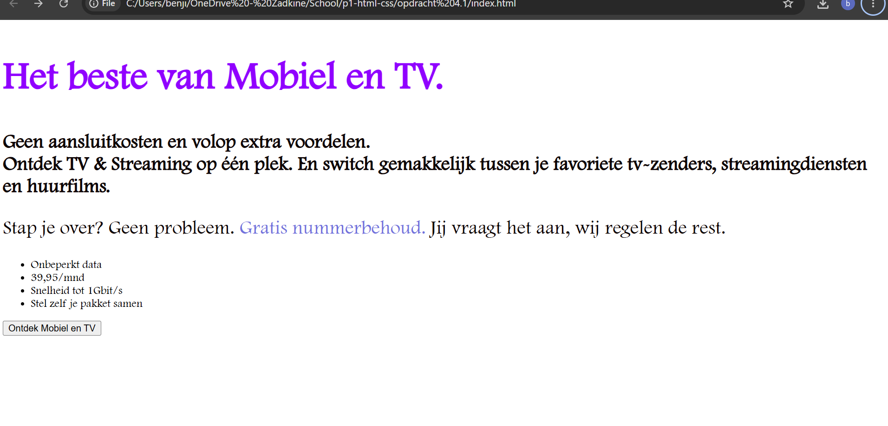
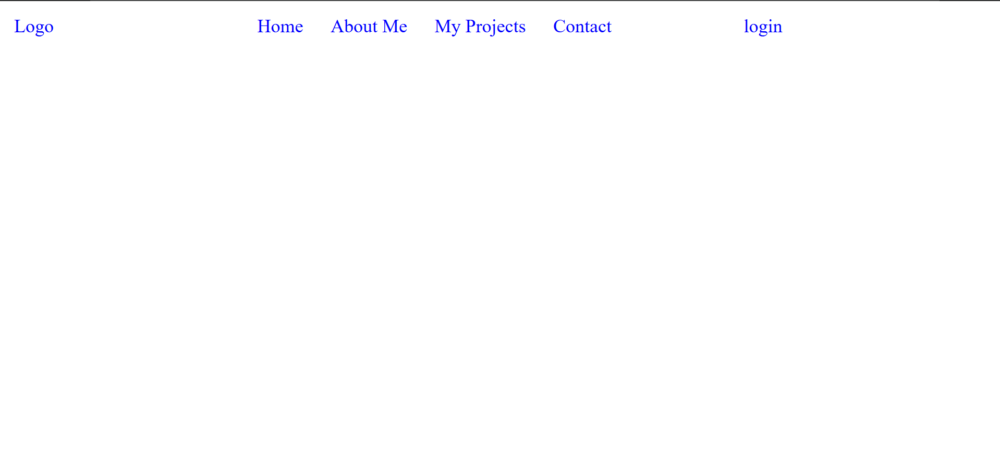
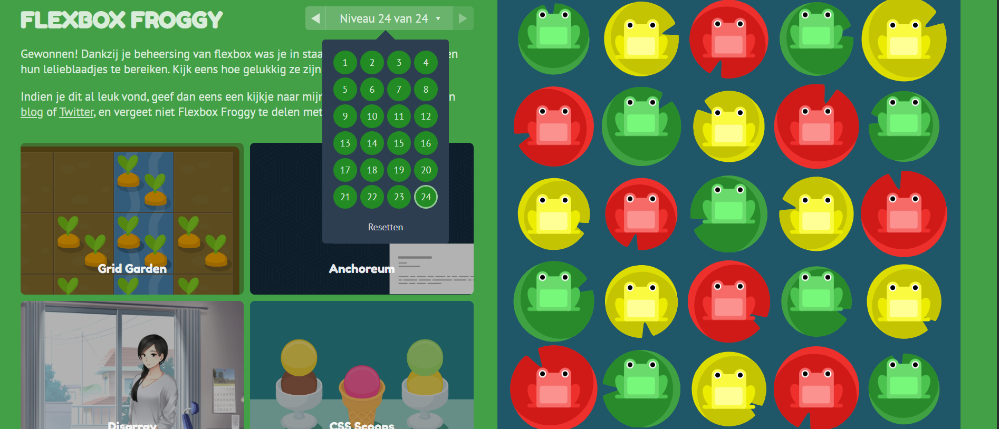

Mijn Projecten
Hier zie je de opdrachten die ik tot nu toe heb gemaakt tijdens mijn opleiding.
Opdracht 4.1: Mobiel en TV
Een eerste webpagina met een kop, tekst, een link, een lijst en een knop. Hierbij heb ik geleerd om HTML en CSS te combineren.

Opdracht 6.3: Navigatiebalk
Een navigatiebalk gemaakt met Flexbox: het logo staat links, het menu in het midden en de loginknop rechts.

Opdracht 6.1: Flexbox Froggy
Met het spel Flexbox Froggy heb ik geoefend met Flexbox. Ik heb alle 24 levels gehaald.

Korte Video
Dit is de eerste video die ik heb bekeken om meer informatie te verzamelen over het code taal: